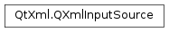

QXmlInputSource¶
Detailed Description¶
The
PySide2.QtXml.QXmlInputSourceclass provides the input data for thePySide2.QtXml.QXmlReadersubclasses.All subclasses of
PySide2.QtXml.QXmlReaderread the input XML document from this class.This class recognizes the encoding of the data by reading the encoding declaration in the XML file if it finds one, and reading the data using the corresponding encoding. If it does not find an encoding declaration, then it assumes that the data is either in UTF-8 or UTF-16, depending on whether it can find a byte-order mark.
There are two ways to populate the input source with data: you can construct it with a
PySide2.QtCore.QIODevice* so that the input source reads the data from that device. Or you can set the data explicitly with one of thePySide2.QtXml.QXmlInputSource.setData()functions.Usually you either construct a
PySide2.QtXml.QXmlInputSourcethat works on aPySide2.QtCore.QIODevice* or you construct an emptyPySide2.QtXml.QXmlInputSourceand set the data withPySide2.QtXml.QXmlInputSource.setData(). There are only rare occasions where you would want to mix both methods.The
PySide2.QtXml.QXmlReadersubclasses use thePySide2.QtXml.QXmlInputSource.next()function to read the input character by character. If you want to start from the beginning again, usePySide2.QtXml.QXmlInputSource.reset().The functions
PySide2.QtXml.QXmlInputSource.data()andPySide2.QtXml.QXmlInputSource.fetchData()are useful if you want to do something with the data other than parsing, e.g. displaying the raw XML file. The benefit of using the QXmlInputClass in such cases is that it tries to use the correct encoding.
-
class
PySide2.QtXml.QXmlInputSource¶ -
class
PySide2.QtXml.QXmlInputSource(dev) Parameters: dev – PySide2.QtCore.QIODeviceConstructs an input source which contains no data.
Constructs an input source and gets the data from device
dev. Ifdevis not open, it is opened in read-only mode. Ifdevis 0 or it is not possible to read from the device, the input source will contain no data.
-
PySide2.QtXml.QXmlInputSource.data()¶ Return type: unicode Returns the data the input source contains or an empty string if the input source does not contain any data.
See also
PySide2.QtXml.QXmlInputSource.setData()PySide2.QtXml.QXmlInputSource.QXmlInputSource()PySide2.QtXml.QXmlInputSource.fetchData()
-
PySide2.QtXml.QXmlInputSource.fetchData()¶ This function reads more data from the device that was set during construction. If the input source already contained data, this function deletes that data first.
This object contains no data after a call to this function if the object was constructed without a device to read data from or if this function was not able to get more data from the device.
There are two occasions where a fetch is done implicitly by another function call: during construction (so that the object starts out with some initial data where available), and during a call to
PySide2.QtXml.QXmlInputSource.next()(if the data had run out).You don’t normally need to use this function if you use
PySide2.QtXml.QXmlInputSource.next().See also
PySide2.QtXml.QXmlInputSource.data()PySide2.QtXml.QXmlInputSource.next()PySide2.QtXml.QXmlInputSource.QXmlInputSource()
-
PySide2.QtXml.QXmlInputSource.fromRawData(data[, beginning=false])¶ Parameters: - data –
PySide2.QtCore.QByteArray - beginning –
PySide2.QtCore.bool
Return type: unicode
This function reads the XML file from
dataand tries to recognize the encoding. It converts the raw datadatainto aPySide2.QtCore.QStringand returns it. It tries its best to get the correct encoding for the XML file.If
beginningis true, this function assumes that the data starts at the beginning of a new XML document and looks for an encoding declaration. Ifbeginningis false, it converts the raw data using the encoding determined from prior calls.- data –
-
PySide2.QtXml.QXmlInputSource.next()¶ Return type: PySide2.QtCore.QCharReturns the next character of the input source. If this function reaches the end of available data, it returns QXmlInputSource::EndOfData . If you call after that, it tries to fetch more data by calling
PySide2.QtXml.QXmlInputSource.fetchData(). If thePySide2.QtXml.QXmlInputSource.fetchData()call results in new data, this function returns the first character of that data; otherwise it returns QXmlInputSource::EndOfDocument .Readers, such as
PySide2.QtXml.QXmlSimpleReader, will assume that the end of the XML document has been reached if the this function returns QXmlInputSource::EndOfDocument , and will check that the supplied input is well-formed. Therefore, when reimplementing this function, it is important to ensure that this behavior is duplicated.
-
PySide2.QtXml.QXmlInputSource.reset()¶ This function sets the position used by
PySide2.QtXml.QXmlInputSource.next()to the beginning of the data returned byPySide2.QtXml.QXmlInputSource.data(). This is useful if you want to use the input source for more than one parse.Note
In the case that the underlying data source is a
PySide2.QtCore.QIODevice, the current position in the device is not automatically set to the start of input. CallQIODevice.seek(0) on the device to do this.See also
-
PySide2.QtXml.QXmlInputSource.setData(dat)¶ Parameters: dat – PySide2.QtCore.QByteArrayThis is an overloaded function.
The data
datis passed through the correct text-codec, before it is set.
-
PySide2.QtXml.QXmlInputSource.setData(dat) Parameters: dat – unicode Sets the data of the input source to
dat.If the input source already contains data, this function deletes that data first.
See also
© 2018 The Qt Company Ltd. Documentation contributions included herein are the copyrights of their respective owners. The documentation provided herein is licensed under the terms of the GNU Free Documentation License version 1.3 as published by the Free Software Foundation. Qt and respective logos are trademarks of The Qt Company Ltd. in Finland and/or other countries worldwide. All other trademarks are property of their respective owners.